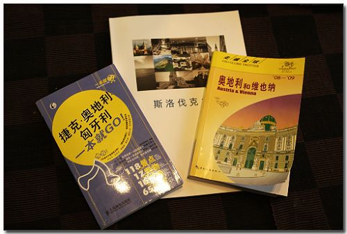

做功课 @ Sep 15, 2009
陆续买了几本目的地的指导书，或许在网络上能寻到更丰富的信息，考虑到携带还是购买比较方便。仍然没有买到期望中有关瑞士的书，打电话告诉商家一旦某出版社的书上市第一时间通知我。昨日联系北京的H，询问她在瑞士期间的计划，哇，人家准备去瑞士乡下消磨几日，当地是德语和法语区，这个...这个...需要研究一下再作决定。可是两个人行走总好过一个人，好歹有人给你拍照啊！
咱拖沓惯了，可是这样的旅行还是要提前做足功课才会开心的在路上，每天睡觉前想想出发前准备的东西，穿什么鞋拎多大的箱子用哪个相机包带几个镜头以及当时的气温适合的着装......淡定...淡定...整个十月计算下来大约只有十来天工作，快活之后这一年的假基本全部用光，象少爷说的“假一度完感觉这一年也就完了”。
近期疲于奔波，我是那种胖瘦很明显的人，稍微累着就瘦，一旦悠闲下来就胖。买了筒子骨和着小蘑菇炖了汤，明天准备炖黄豆猪脚，后天......总之希望自己胖一些再胖一些，这样才有份量经得起旅行期间的消耗。
LUKE坐在旁边象一个雕塑，动都不动，傻了？
天微亮我睁开眼看到一只狗头在我面前，原来LUKE坐在床边，把头搁在床沿上看着我，吓死人了，这只呆狗！
现在的书真TNND贵，买书花了300多元，当然不止这三本，还没买到最想要的那本。
对布拉格的印象源于7年前两个朋友打算去那儿度蜜月，如今这两人一个去国外留学一个留在国内，东飞伯劳西飞燕。

21 Responses to “做功课”
2009-09-15
瘦了人更漂亮阿，不过旅行前真的要好好补充一下，不论是身体还是攻略。嘿，很喜欢你的眼镜哪，能告诉一下啥牌子滴么～
2009-09-15
没牌子，连镜片才200元，在家门口的眼镜店买的，呵呵~
2009-09-15
Christina一直是很漂亮的，不，应该说是美，呵呵！
这次去中欧啊，10月份应该有点点冷了，不过中欧的风情确实是不错的！
2009-09-15
这件衣服的颜色衬得你皮肤更加白皙了。
望你旅行中给我们带来美图！期待，呵呵！
2009-09-15
遗憾~~~~没准备带笔记本啊~~~~这件真丝衬衫我自己也很稀饭呢~~~
2009-09-15
度假之前我总想着把每一天假都安排的很充实，但是到了假期即将结束时我总是抱怨时间太快.抱怨自己浪费了好多时光，就希望时光能倒流~~~衣服象是真丝吧，颜色漂亮，喜欢那一排小包扣~~
2009-09-15
巧了，那本黄色的和我去吴哥的是一套。luke大概知道你要走了，这表情。。。
2009-09-15
我好希望我能瘦一点。我现在很辛苦也不瘦。呜~~~
2009-09-15
同事的朋友去欧洲和东非写了一个旅游系列。
你可以参考一下，http://www.dayong.name/。
后来他们写了书，很浪漫！
2009-09-15
查查瑞士国家旅游局官网或许有点用。
2009-09-15
好像呢，好久没有dress blog了。今天就成全我们了。
Luke是不是知道你要旅行了？
2009-09-15
Rick Steves (http://www.ricksteves.com/) 的欧洲导游书相当不错。我们去瑞士就用了他的书。有一个小缺点：到了欧洲，你会发现在北美观光客中，他的书几乎人手一册！
2009-09-15
去布拉格别忘了参观犹太人的墓园，很那个什么的说。。。反正我是挺受震动的。。。
2009-09-15
不买本lonley planet？
2009-09-16
在先锋书店看到的“lonley planet”不是指导书，而是传记形式的。Rick Steves 要找找呢，南京书店的旅游书籍我个人认为不是很全面。
有关布拉格“犹太人的墓园”，正好这两天看过书上的介绍，布拉格的犹太人死后都希望把自己葬在这个墓园里，可是面积就那么大，墓碑却越来越多。。。。。。一定会到这个墓园看看的：D
2009-09-16
布拉格的高堡区有个很著名的墓地，貌似不是犹太人，而是名人。有个骷髅头的整面墙壁，还是很震撼的……我本人不稀饭维也纳，希望你能玩得开心
2009-09-16
我六月份刚去过捷克，奥地利和匈牙利，正准备写游记，会有一些攻略，希望到时候对你有帮助！~ 我超级喜欢奥地利的Hallstatt,强烈建议你们去住至少一晚，我们在那里临时改变计划，住了两晚。一宁静的世外桃源；捷克的Karlovy Vary也是想强烈推荐的，很漂亮的小城！~ 去的那天恰逢天晴，好美的温泉小镇…
2009-09-17
唉 我今年还没休假 真想跟你搭伴下啊……
2009-09-18
你的行程是怎么安排的？我曾經在日內瓦呆過一周，也許給你一些參考。
2009-09-18
哇,告诉我一下你的旅行计划,我看看是否能挤出时间来,在布拉格与你碰头.
2009-09-18
感谢上面两位，会在你们的BLOG上回复，现在这样的热心人越来越少，所以也越来越珍贵：P
Leave A Reply
存档只读，评论已关闭。